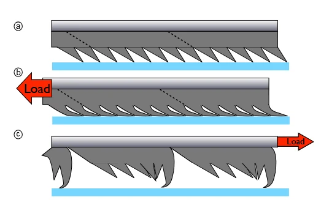

本文目录 · 7 节
一句话精要：高载荷爬墙同时需要“承重时抓牢”和“摆动时放开”。Hawkes 用方向性干黏附、连接几何和切缝降低非优选方向阻力，让微型机器人实现高载荷比的竖直攀爬。
{kind=link}

放大查看 ↗· 论文事实、项目启发与待验证事项分开记录。
机制 / 结构如何把动作变成附着
优选方向剪切使 PDMS 微楔贴伏、增加真实接触；卸载后微结构回弹，便于离墙。9 g 版本通过腱绳连接位置让摆动垫旋转离墙；20 mg 版本通过斜向切缝，让反向运动时切缝打开。两种方法都在降低无效拖拽。
α = Anp / Ap：Ap 是优选方向承载能力，Anp 是非优选方向阻力。简化步态中净承载余量取决于二者之差。若使用应力数据，必须先乘以相应有效面积，不能直接与以 N 表示的整机重量相减。
项目启发 / 哪些值得迁移
薄板曲率诱导剥离可以先作为待检验的结构方案保留，不必立即假设必须制造复杂微结构。要测的是曲率是否降低摆动阻力，同时保留承重能力。载荷转移应让新足先接合、旧足再卸载；这一顺序也适用于栖停后的安全离墙。
证据 / 参数与测试条件
| 项目 | 原文或精读记录 | 条件与解释 |
|---|---|---|
| 厘米级机器人 | 9 g；约 30 × 25 × 20 mm | 板载电源与控制版本 |
| 步长 / 无载速度 | 12 mm / 18 mm·s⁻¹ | 约 1.5 Hz；不能与满载速度混用 |
| 高载荷工况 | 约 1.1 kg 最大载荷 | 约 1 kg 时速度降至 3–4 mm·s⁻¹ |
| 各向异性比 α | 0.73 → 0.083 → 0.016 | 依次为标准垫、机械各向异性、切缝材料；不同构型对照 |
实验 / 转化为可检查的问题
以下为结合阅读提出的实验建议，尚不代表本项目已完成：
- 分别测相同试样的优选与非优选方向力—位移曲线，比较峰值、稳态阻力和曲线面积。
- 人为制造一次新足接合失败，确认原承重足没有提前释放；同步记录法向力与剪切力。
边界 / 这些结论不能直接外推
百倍自重是小尺度、指定表面和加载方式下的结果。20 mg 版本依赖外部热源，不能当作完整自主平台；本文也没有验证粗糙面微刺与干黏附的双模切换。
关联阅读 / 沿问题继续读
- Federle2019 — 解释为何剪切与剥离角度能快速调节附着。
- Yu2024 — 用基底卷曲实现脱附，是另一种控制接触面积的方法。
- Modabberifar2018 — 将剪切激活交给 SMA 后，需要额外考虑保持功耗和冷却时间。
论文关联地图 · 当前项目记录：光滑面方案仍在筛选，历史干黏附构想不等于已定型方案。
来源 / 阅读记录与原文
整理依据：paperreading：Hawkes_百倍自重干黏附、Anp测试与薄板曲率脱附验证、干黏附各向异性比alpha。